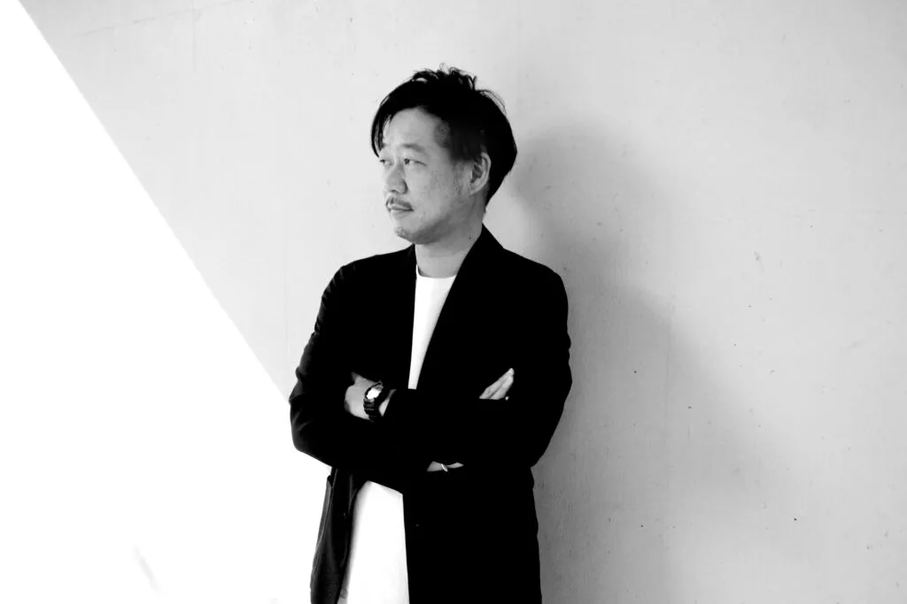

DX、業務改善PJのPMO。DX動画研修のフォローアップ施策として、ワークショップ設計、実行委員チームビルディングなど実施。
PROFILE
MASAKI SUKEDA
IT×HRの専門知見を両輪に持つ、伴走型の「翻訳者・交通整理役」。
ABOUT
「仕組みと温度感」、両方持って伴走します
すけさん（1976年生）ベンチャー企業顧問・DiSA代表理事←ディレクター特化型人材エージェント←Webディレクター／ENFJ／傾聴力強め／R3年生まれの娘ちゃん育児奮闘中

助田 正樹
MASAKI SUKEDA
一般社団法人ディレクションサポート協会 代表理事
株式会社ShareDan 顧問
株式会社IMAKE 顧問
東京都品川区出身の1976年7月生まれ。桜美林大学経済学部を卒業後、メーカーでシックスシグマというフレームワークのR&Dセクションに所属。2005年からインターネット系ベンチャー企業中心にWebディレクターとして数社経験。地域コミュニティサイト、採用サイト、モバイル&デジタルサイネージなど様々なWebサイト、システムの構築・運用から、新規事業プロジェクト企画、立ち上げを経験。2012年6月に人材紹介&コワーキングスペース事業を立ち上げ、取締役で8年間従事。Webディレクター中心に累計3,000名近くのキャリア相談を行う。日本ディレクション協会創設メンバーの1人。2020年4月より個人事業SPEC.の活動を開始後、2022年10月に一般社団法人ディレクションサポート協会を設立。デジタル系企業数社の顧問を務める。
SOLUTION
伴走型の支援メニュー

事業推進課題
「社長が現場に入らないと回らない」「施策は打っているがKPIに繋がらない」──そんな状態の整理役として入ります。Webディレクションの解像度とHRの知見を両輪に、事業推進を伴走支援します。

アウトソース課題
複数の外注先がバラバラに動いてカオス状態に……。「交通整理の指揮官」として外部パートナーのハンドリング・品質管理・指示出しフローの整備まで、泥臭い実務に責任を持って伴走します。

中途採用課題
「スキルの定義からやり直さないとダメだ」と痛感している採用担当へ。3,000名超のキャリア相談実績をもとに、スキルセットの言語化・エージェントコントロール・面接同席まで、「現場の目」として採用を構造から変えます。
FOR WHO
こんな方々の相談に乗りたいです

クリエイティブ企業の代表
「自分が現場に入らないと回らない」と気づいているが、現場を任せられる人材が見つからない社長へ。

事業会社のPM・マーケ責任者
施策は打っているのにKPIに繋がらない。外注先がカオス化していて疲弊しているPM・マーケ担当者へ。

人事部長・採用担当
デジタル職種の採用ミスマッチが続いている。「スキルの定義からやり直したい」と感じている採用担当へ。
WORKS
プロジェクト実績
マイナビクリエイターにおける新規求職者集客施策。ウェビナー企画、KPI管理、イベントレポート、監修記事ディレクションなど実施。
MATCHBOXユーザーに対して、CRM施策の一環としてウェビナー企画、KPI管理、イベントレポート、監修記事のディレクションを実施。
ニフティライフスタイル株式会社が運営するニフティ不動産、ニフティ温泉チームのチームビルディング。PdM中心に業務委託チーム体制の構築支援。
主に経営管理、関連事業者のグロース、事業の折衝能力や代、メンバー 1on1。リード獲得におけるキーマンの紹介なども支援。
主に経営管理、関連事業者のグロース、事業の折衝能力や代、メンバー 1on1。リード獲得におけるキーマンの紹介なども支援。
主に制作事業のグロースに対する伴走支援及び調達のファシリテーション。リード獲得におけるキーマンの紹介なども支援。
採用基盤構築、エージェントコントロール、採用会議ファシリテーションなど。ディレクションチームの1on1など多方面に実施。
採用基盤構築、採用フロー全般の設計・ディレクション、エージェントコントロール、採用会議ファシリテーションなど。
デジタルマーケティング戦略、SaaS開発を行うMattrz社のSES新規事業支援とフォローアップを実施。
インターネット系やバックオフィス系の人材紹介事業のグロース支援、販路開拓におけるキーマンの紹介なども。
月間UU40万人を超えるビジネス教養メディアKAIRYUSHAの支援。PL設定、予算管理、会員向けコンテンツ制作なども支援。
※プロジェクトの成果は公開できないため個別にご依頼してください。